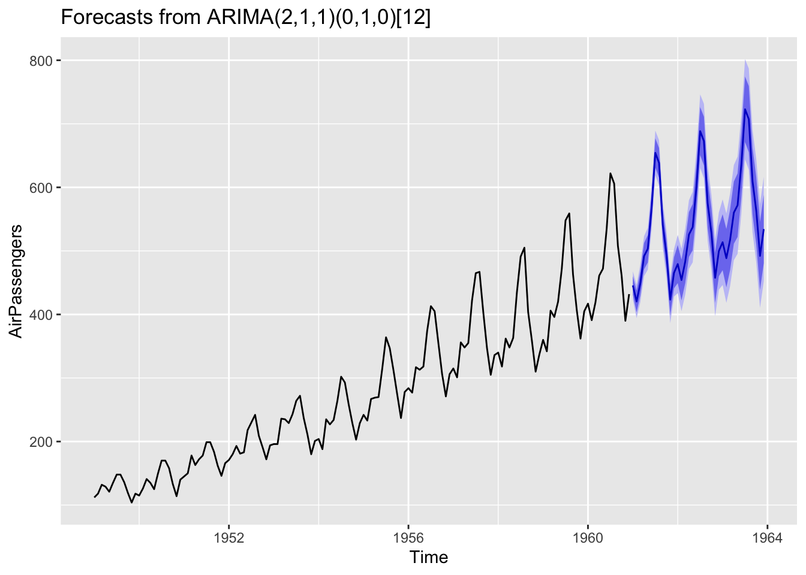

library(forecast)
# ARIMA is good for data with covariance patterns
AirPassengers |>
arima(order = c(2,1,1), seasonal = c(0,1,0)) |>
forecast(h=36) |>
autoplot()

So far we have introduced basic univariate time series models and their estimation. One common application of univariate time series analysis is forecasting. Forecasting is a rather complex topic, with a wide range of techniques from basic ARMA models to machine learning. This book is not specialized in forecasting. We only devote this section to briefly cover forecasting based on ARMA models. We will start with some intuition. Then justify the intuition with a bit of formal theory.
Suppose we have an AR(1) process,
\[ y_t = \phi y_{t-1} + \epsilon_t, \quad\epsilon_t\sim\text{WN}(0,\sigma^2). \]
What would be the reasonable forecast for \(y_{T+1}\) given \(y_1,...,y_T\)? It seems sensible to simply drop the white noise, as it is something completely unpredictable and it has mean zero. Thus,
\[ \hat y_{T+1|T} = \phi y_t. \]
This is 1-period ahead forecast. But how do we forecast \(k\)-period ahead? Heuristically, we can simply iterate over to the future:
\[ \begin{aligned} \hat y_{T+2|T} &= \phi\hat y_{T+1|T} = \phi^2 y_T, \\ \hat y_{T+h|T} &= \phi\hat y_{T+h-1} = \cdots = \phi^h y_T. \end{aligned} \]
We will leave the heuristic solutions here and justify them later. If we accept this heuristic approach, we can easily generalize it to AR(\(p\)) processes:
\[ \begin{aligned} y_t &= \phi_1 y_{t-1} + \phi_2 y_{t-2} + \dots + \phi_p y_{t-p} + \epsilon_t. \\ \hat y_{T+1|T} &= \phi_1 y_{T} + \phi_2 y_{T-1} + \dots + \phi_p y_{T-p+1}, \\ \hat y_{T+2|T} &= \phi_1\hat y_{T+1|T} + \phi_2 y_{T} + \dots + \phi_p y_{T-p+2}, \\ &\vdots \\ \hat y_{T+h|T} &= \phi_1\hat y_{T+h-1|T} + \phi_2\hat y_{T+h-2|T} + \dots + \phi_p y_{T-p+h}. \\ \end{aligned} \]
For MA(\(q\)) processes
\[ y_t = \epsilon_t + \theta_1\epsilon_{t-1} + \theta_2\epsilon_{t-2} + \cdots + \theta_q\epsilon_{t-q} \] Suppose we know the past innovations until \(T\): \(\epsilon_{T}, \epsilon_{T-1}, ...\) The best way to forecast \(\hat y_{T+h|T}\) looks to simply discard \(\epsilon_{T+1},...,\epsilon_{T+h}\). Since we have no knowledge about future innovations given the information at time \(T\). Therefore,
\[ \begin{array}{llll} \hat y_{T+1|T} &= \theta_1\epsilon_T + &\theta_2\epsilon_{T-1} + &\theta_3\epsilon_{T-2} + \cdots \\ \hat y_{T+2|T} &= &\theta_2\epsilon_T + &\theta_3\epsilon_{T-1} + \cdots \\ &\vdots & & \\ \hat y_{T+h|T} &= & & \theta_h\epsilon_T + \theta_{h+1}\epsilon_{T-1} + \cdots \end{array} \]
We now justify our heuristic solutions by the theory of best linear predictor. Suppose we want to forecast \(y\) give the information set \(X\).
Definition 13.1 The best linear predictor (BLP) is defined as
\[ \mathcal{F}(y|X)=x'\beta^* \] which is a linear function of \(X=(x_1,x_2,...,x_p)\) such that
\[ \beta^* =\text{argmin}\ \mathbb{E}(y-x'\beta)^2. \]
Taking first-order condition with respect to \(\beta\) gives
\[ \beta^* = [\mathbb{E}(xx')]^{-1} \mathbb{E}(xy). \]
Therefore, the BLP is given by
\[ \hat y = \mathcal{F}(y|X)=x'\beta^* = x'[\mathbb{E}(xx')]^{-1} \mathbb{E}(xy). \]
The prediction error is
\[ r_{y|X} = y - \hat y = y - x'[\mathbb{E}(xx')]^{-1} \mathbb{E}(xy). \]
The BLP is the linear projection of \(y\) onto \(X\). Because \(\mathbb{E}[x(y-x'\beta)]=0\). The forecast error is orthogonal to \(X\).
Proposition 13.1 BLP has the following properties:
ARMA model is a basic yet powerful tool for forecasting. Given all stationary time series can be approximated by ARMA processes, it makes sense to model a stationary time series with ARMA, and then make forecast based on that model. We will see our heuristic solutions in the first part can be easily justified with the theory of BLP.
We have said that, for an AR(\(p\)) process
\[ y_t = \phi_1 y_{t-1} + \phi_2 y_{t-2} + \dots + \phi_p y_{t-p} + \epsilon_t, \]
The one-step-ahead forecast is simply
\[ \hat y_{T+1|T} = \phi_1 y_{T} + \phi_2 y_{T-1} + \dots + \phi_p y_{T-p+1}. \]
This is the BLP immediately from Property 2 of Proposition 13.1. We can also justify the iterated \(h\)-step-ahead forecast by Property 1 (assuming \(h<p\)):
\[ \begin{aligned} \hat y_{T+h|T} &= \phi_1\hat y_{T+h-1|T} + \phi_2\hat y_{T+h-2|T} + \cdots + \phi_h y_{T} + \dots + \phi_p y_{T+h-p} \\ &= \phi_1\mathcal{F}[y_{T+h-1}|y_T, y_{T-1}...] + \cdots + \phi_p\mathcal{F}[y_{T+h-p}|y_T, y_{T-1}...] \\ &= \mathcal{F}[\phi_1 y_{T+h-1} + \cdots + \phi_p y_{T+h-p} | y_T,y_{T-1},...] \\ &= \mathcal{F}[y_{T+h}|y_T,y_{T-1},...] \end{aligned} \]
This is assuming all the forecast before \(h\) are BLPs, which can be justified recursively. Also note that for the values readily observed: \(y_T, y_{T-1},...\) , the BLP is the value itself.
For the MA(\(q\)) process
\[ y_t = \epsilon_t + \theta_1\epsilon_{t-1} + \theta_2\epsilon_{t-2} + \cdots + \theta_q\epsilon_{t-q} \]
The BLP for \(h\)-step-ahead forecast is (assuming \(h<q\))
\[ \begin{aligned} \hat y_{T+h|T} &= \mathcal{F}(y_{T+h}|\epsilon_T,\epsilon_{T-1}...) \\ &= \mathcal{F}(\epsilon_{T+h}|\epsilon_T,\epsilon_{T-1}...) + \theta_1\mathcal{F}(\epsilon_{T+h-1}|\epsilon_T,\epsilon_{T-1}...) + \cdots + \theta_q\mathcal{F}(\epsilon_{T+h-q}|\epsilon_T,\epsilon_{T-1}...) \\ &= 0 + \cdots + 0 + \theta_h\epsilon_T + \cdots + \theta_q\epsilon_{T+h-q} \end{aligned} \]
We make use of Property 3 of Proposition 13.1 with the knowledge that \(\text{cov}(\epsilon_i,\epsilon_j)=0\) for \(i \neq j\). This result is also consistent with our intuition, because we have no knowledge of future innovations, the best thing we can do is assuming they are zeros. If \(h>q\), then all \(\mathcal{F}(\epsilon_{T+h-q}|\epsilon_T,\epsilon_{T-1}...)\) are zero, which yields \(\hat y_{T+h|T} = 0\).
In practice, we do not observe \(\{\epsilon_{t}\}\). If we have an estimated MA model and we want to make forecast based on the model, we need to back out \(\{\epsilon_{t}\}\) from \(\{y_t\}\) by inverting the MA process: \(\epsilon_t = \theta^{-1}(L)y_t\).
With the MA specification, we can easily compute the Mean Squared Forecast Error (MSFE) as follows
\[ Q_{T+h|T} = \mathbb{E}(y_{T+h} - \hat y_{T+h|T})^2 = \mathbb{E}\left(\sum_{j=0}^{h-1}\theta_j\epsilon_{T+h-j}\right)^2 = \sigma^2\sum_{j=0}^{h-1}\theta_j^2. \]
Consider the ARMA(\(p\), \(q\)) process
\[ (1-\phi_1L-\cdots-\phi_pL^p)y_t = (1+\theta_1L+\cdots+\theta_qL^q)\epsilon_t \]
We assume the process is causal and invertible. We can transform it to an AR(\(\infty\)) process or MA(\(\infty\)) process.
Causal form:
\[ y_t = \phi^{-1}(L)\theta(L)\epsilon_t = \sum_{j=0}^{\infty} \psi_j\epsilon_{t-j} \]
Invertible form:
\[ \epsilon_t = \theta^{-1}(L)\phi(L)y_t = \sum_{j=0}^{\infty} \pi_j y_{t-j} \]
or
\[ y_t = -\sum_{j=1}^{\infty} \pi_j y_{t-j} + \epsilon_t \]
As we have seen so far, it is relatively easier to compute the mean forecast with AR models, and the MSFE with MA models. So we make forecast with the AR representation:
\[ \hat y_{T+h|T} = -\sum_{j=1}^{h-1}\pi_j\hat y_{T+h-j} - \sum_{j=h}^{\infty}\pi_jy_{T+h-j} \]
However, we do not observe infinite past values in real world. We can only use the truncated values, discarding past values that we do not observe \(y_0,y_{-1}, y_{-1},...\)
\[ \hat y_{T+h|T} = -\sum_{j=1}^{h-1}\pi_j\hat y_{T+h-j} - \sum_{j=h}^{T+h-1}\pi_jy_{T+h-j} \]
We compute the MSFE with the MA representation:
\[ Q_{T+h|T} = \mathbb{E}(y_{T+h} - \hat y_{T+h})^2 = \sigma^2\sum_{j=0}^{h-1}\psi_j^2 \]
If we can compute the prediction interval if we assume some probability distributions for the innovations. If we assume \(\epsilon_t\overset{iid}\sim N(0, \sigma^2)\), then \((y_1,...,y_{T+h})'\) is jointly normal. Therefore,
\[ y_{T+h} - \hat y_{T+h|T} \sim N(0, Q_{T+h|T}) \]
The prediction interval is thus given by \(\hat y_{T+h|T} \pm z_{\alpha/2}\sqrt{Q_{T+h|T}}\).
The following examples use ARMA models to forecast inflation rate and stock market index. The parameters of the ARMA models are chosen automatically. We can see for the inflation rate, the model produces some patterns in the forecast. But for the stock market index, the forecast is an uninformative flat line, indicating there is no useful patterns in the past data can be extrapolated by the ARMA model.
library(forecast)
# ARIMA is good for data with covariance patterns
AirPassengers |>
arima(order = c(2,1,1), seasonal = c(0,1,0)) |>
forecast(h=36) |>
autoplot()# ARIMA provides little information for random walk process
EuStockMarkets[,'DAX'] |>
window(start = 1997) |>
arima(order = c(2,1,1)) |>
forecast(h=30) |>
autoplot()